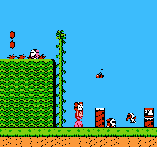
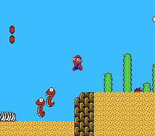
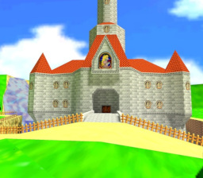
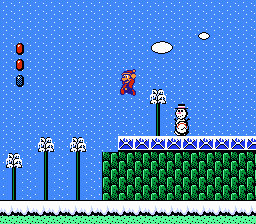
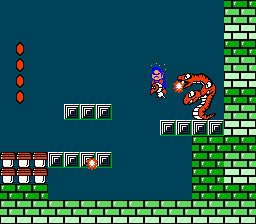
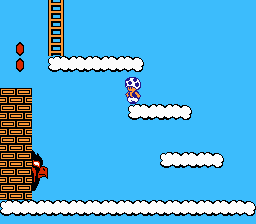
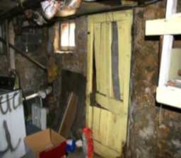

Grass
Grasslands is the first world Mario, Luigi, Princess Toadstool, and Toad venture through in Super Mario Bros. 2. The bosses in this world are the egg-spitting Pink Birdo and Mouser. These levels tend to have waterfalls with log bridges.
Desert
The desert, also know as World of Deserts, is themed around sand dunes and pyramids. The final boss of this world is a three-headed snake called Tryclyde.
Peach's Castle
Peach's Castle (also known as Princess Peach's Castle or Mushroom Castle) is the castle situated within the Mushroom Kingdom and its most prominent landmark. At least thats how it seems.
Snow
Snowlands is the fourth world in Super Mario Bros. 2. The world has a unique snow and ice theme to it, and introduces the player to the Flurry and Autobomb enemies. The boss of this world is Fryguy.
Caves
There are cave areas within each level of Super Mario Bros. 2. Some cave systems have treasure for the player, while others lure the player into traps.
Sky
The sky is the seventh and final world in Super Mario Bros. 2. Taking place high above the clouds and in the sky, this is where Wart resides. Luigi stares at the sky very often. What is going through his mind?
Mario's Apartment
Presumed living space of the Mario brothers. The Mario brothers are nowhere to be found, perhaps they left on another plumbing job. Rumored to be where the fugitive Toad is harboured.
Void

A state of nothingness. The absence of being. The end of all. Neither what is, nor what is not. Nil. Nonexistence. A lack of everything. Oblivion. Absolute nihil.